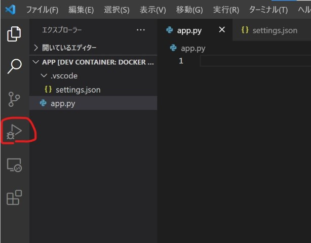
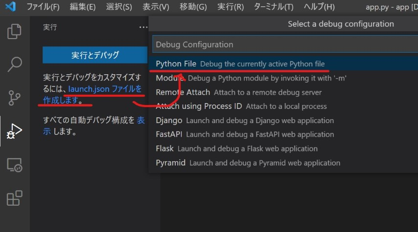
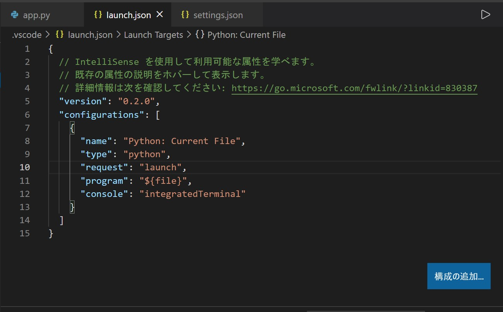
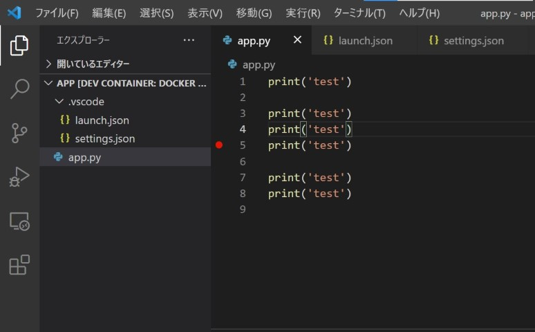
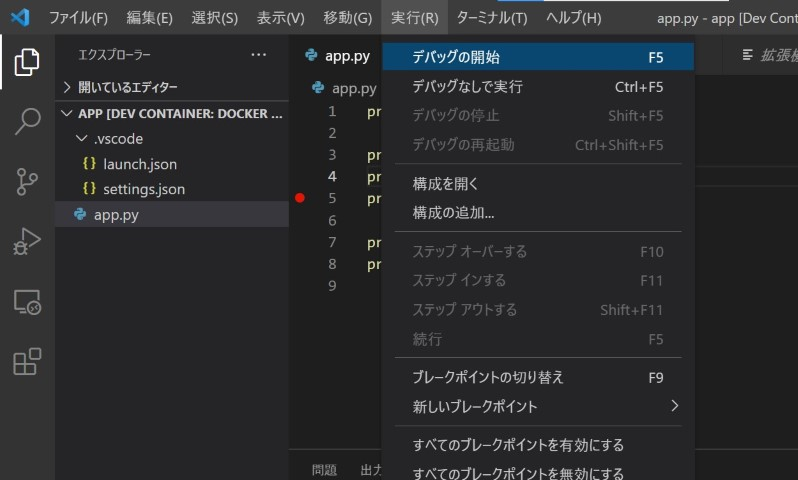
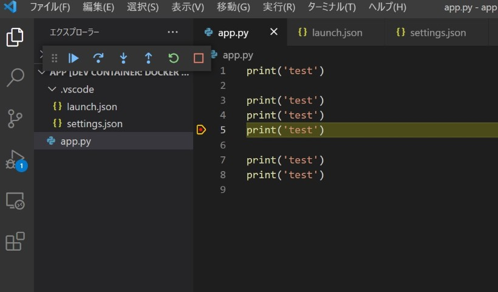
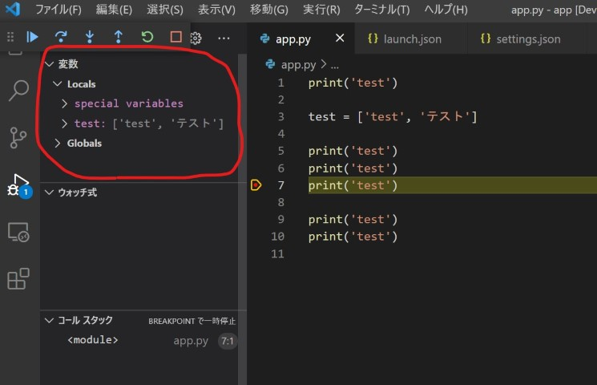

Survey

python デバッグ環境構築について調査しました
前提
-
Editor
VSCode -
Plugin
Python (ms-python.python)
Remote Contaner (ms-vscode-remote.remote-containers) -
その他環境
Dockr image は python:3.6 使用
Remote Contaner でコンテナ内の python:3.6 を参照しプログラムを実行
VSCodeでデバッグ環境を作る
- launch.jsonを作成する
VSCodeのデバッグ機能を使うためには、「launch.json」という設定ファイルを作成する必要があります。
まずVSCodeのデバッグアイコンをクリックします。

その後以下の箇所を押下します。

以下の内容のlaunch.jsonが作成されます。

あとは適当にブレークポイントを打ちます。

「実行」メニューの「デバッグの開始」から実行します。

デバッグが実行されます。

変数の中身は以下に表示されます。

余談
別件で Docker + Python Flask + Remote Container + VSCodeでデバッグ環境を作った際ハマったことです。
- 出ていたエラー
Address already in use
- 原因
Dockerfile の方で、最後に以下のコマンドを実行していました。
Docker コンテナを立ち上げた時点でサーバーも起動するようになってます。
CMD ["python", "app.py"]
そして以下が Flask プロジェクトの launch.json です。
上記と同様の手順で自動生成されたファイルです。
"args": [
"run",
"--no-debugger",
"--no-reload"
],
同じサーバーを2つ立ち上げようとしたことによるエラーでした。
- 対策
取り敢えず Dockerfile の CMD [“python”, “app.py”] の部分をコメントアウトし、対応しています。
後日もっと良い方法を探せたら良いなぁ。